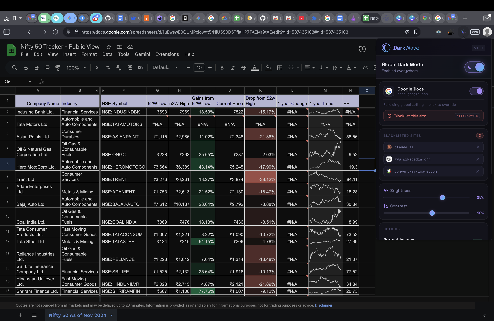

Sheets has no native dark mode on the web — only in the mobile apps. Here is the honest reason why, and what actually works on a computer.
There is no setting to turn on. Sheets on the web ships one theme, and it is light. Your only real options are a browser extension or a system-wide colour inversion that affects everything on your screen.
This is the detail that explains why so many dark mode extensions half-work on Sheets, and it is worth understanding before you install anything.
Sheets renders its cell grid into a single <canvas> element.
Not a table, not a grid of divs — one drawing surface that the page paints pixels onto.
An extension that works by recolouring page elements sees one opaque rectangle and can do
nothing with it. That is why the usual result is a dark toolbar, dark menus, and a grid
that is still white.
Dark Reader, the most widely used extension in this category, force-enables its
whole-page filter mode for docs.google.com for exactly this reason, and its
maintainers have closed canvas-quality issues as not fixable. Anyone claiming perfect
per-cell theming on Sheets is overstating it.

| Approach | Grid goes dark? | Trade-off |
|---|---|---|
| An extension that filters the whole page | Yes | Cell fills and conditional-formatting colours shift hue |
| An extension that recolours elements | No | Toolbar darkens, grid stays white |
chrome://flags auto dark mode | No | Skips the canvas; Chrome documents the flag as unsupported |
| OS-level invert (macOS, Windows) | Yes | Inverts every application on your machine |
The honest summary: a filter gets you a genuinely dark spreadsheet, and the price is that coloured cells are no longer the exact colours you set. If your workflow depends on precise fill colours, keep a light tab for that sheet — which is a single keystroke below.
One thing worth knowing about images. Filter-based dark mode inverts everything, which would turn photos into negatives. DarkWave re-inverts images, video, logos and icons so they keep their real colours, and does the maths in a way that cannot clip near-white or near-black pixels — which is what leaves photos looking washed out in other tools.
Docs has the same canvas story and the same absence of a desktop setting; Gmail does have a theme picker but it does not cover everything. Both are handled by the same extension, so you do not need one per app.
No. As of August 2026 dark mode exists only in the Google Sheets mobile apps for Android and iOS. On the web there is no setting for it, and enabling your operating system dark mode does not change Sheets — it still reports a light colour scheme and renders a white grid.
The stated obstacle is that a spreadsheet is not just text. Cell fills, conditional formatting and chart colours all carry meaning, and naively darkening the sheet would change them. That is a real problem, and it is the same problem every extension has to solve.
A filter-based extension shifts them, because it transforms the rendered pixels rather than the underlying values. Your data is never touched — only how it is displayed on your screen, only in your browser. Nobody you share the sheet with sees any difference.
Because Sheets draws its cells into a single HTML canvas element rather than as ordinary page elements. Extensions that recolour elements one by one have nothing to recolour — the grid is one opaque rectangle to them, so the toolbar goes dark and the cells stay blinding white.
Not properly. Chrome's experimental "Auto Dark Mode for Web Contents" flag at chrome://flags leaves the Sheets canvas untouched for the same reason, and Google warns the flag is unsupported. Printing to PDF and inverting, or turning down your monitor brightness, are the only extension-free options and neither is practical for daily work.
DarkWave is free and open to install. It darkens Sheets, Docs and every other site you open, skips sites that already have their own dark theme, and makes no network requests at all.